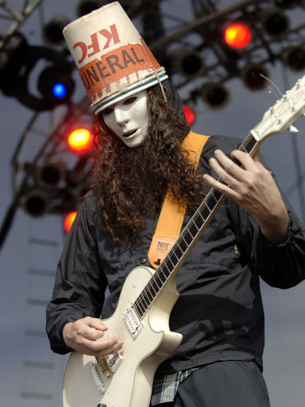
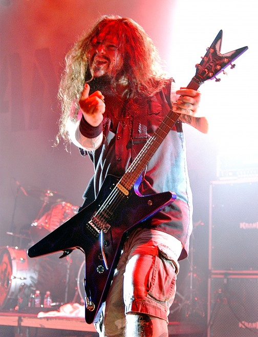
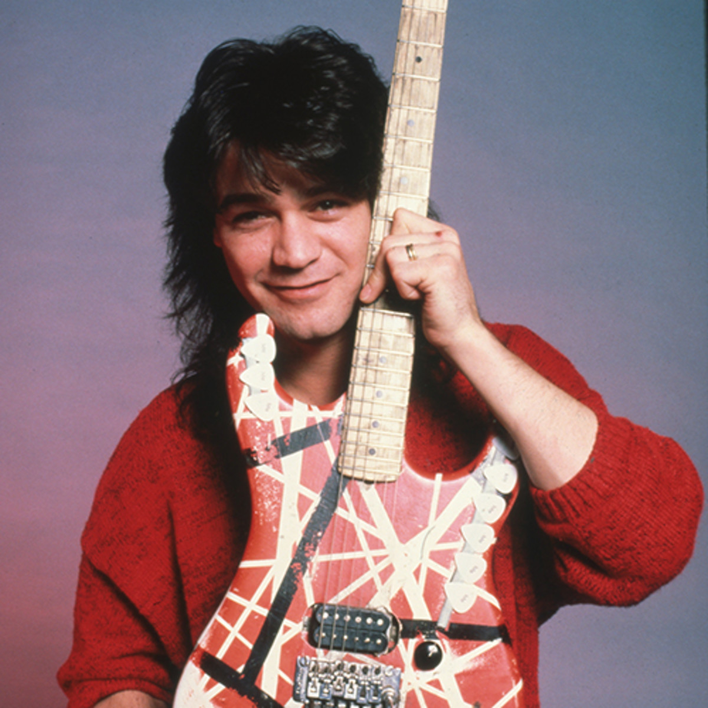
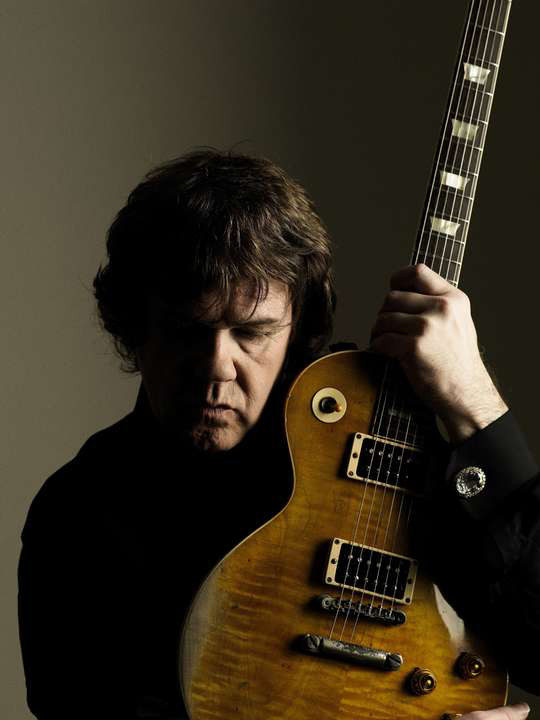
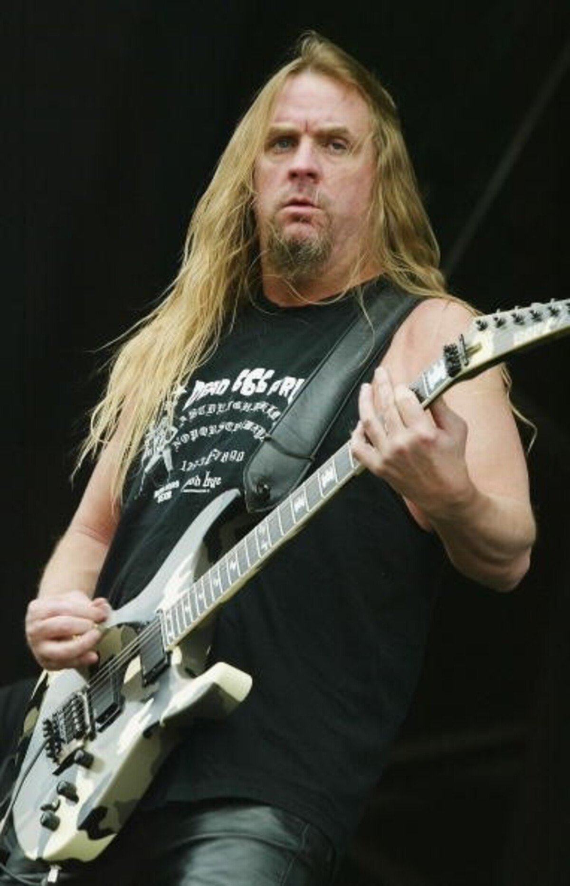
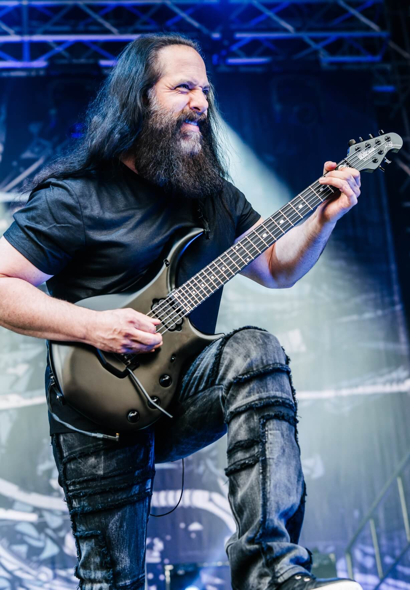
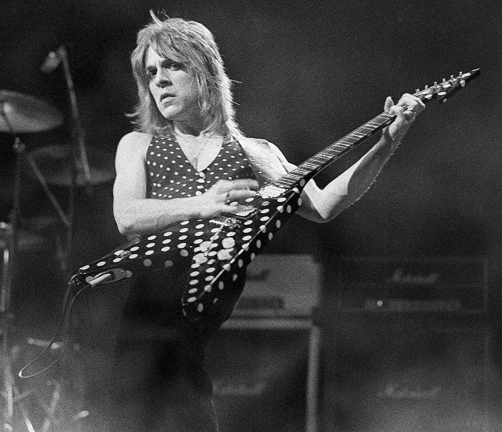
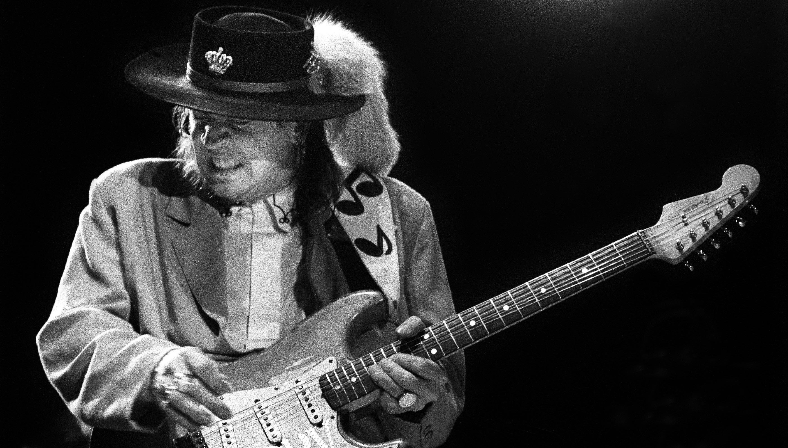
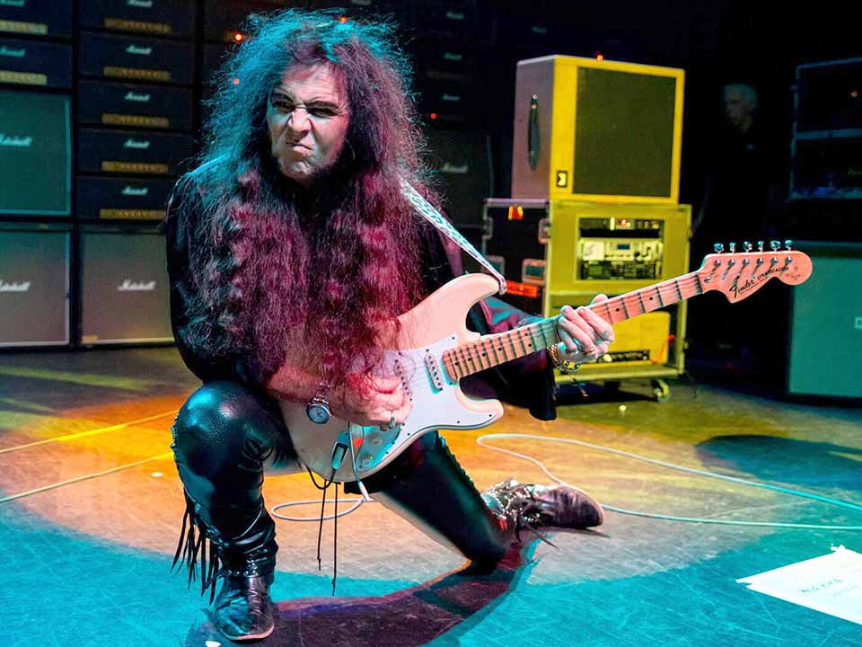

Here are some of the greatest guitarists of all time and what makes them so great! (Guitarists are in alphabetical order, not by personal ranking.)
- Skip to Buckethead
- Skip to Dimebag Darrell
- Skip to Eddie Van Halen
- Skip to Gary Moore
- Skip to Jeff Hanneman
- Skip to John Petrucci
- Skip to Randy Rhoads
- Skip to Steve Vai
- Skip to Stevie Ray Vaughan
- Skip to Yngwie Malmsteen
Buckethead
Buckethead is a eccentric individual who wears a KFC bucket on his head and a blank face mask. However, do not let his appearance fool you as he is renowned for being one of the most diverse guitarists of all time. His playing style can range from simple chords to full on shredding with most songs being very difficult to impossible for a average guitarist. An even more impressive feat is Buckethead has released 31 solo albums along with 294 albums in his "Pikes Series", totaling 325 albums overall. His impressive playing and skill wows new and old guitarists everywhere and his diverse range of genres might have something in store for anyone.
Dimebag Darrell
Darrell Abbott also known as "Dimebag Darrell" is a mean riff making machine. His style of playing is very in your face and makes you want to get up and do something. From the high pitched squeals to the low chug of his guitar his style has not gone unrecognized. Many modern artists credit Dimebag Darrell as a inspiration for their way of playing because of his unique tone and way of playing. Although he may seem intimidating his friendlyness and willingness to interact with his fans makes him a very worthwhile person to checkout. Sadly, on December 8, 2004, a mad gunman would take the life of Dimebag Darrell while onstage. His legacy still lives on from the music he has made.
Eddie Van Halen
Eddie Van Halen is known as a legend in the guitar community as his way of playing shocked and dazzled the world. Eddie is a multi-instrumentalist but is most known for playing on the guitar. He introduced a new way of playing and sound that no one at the time ever heard of. In many of his songs he would tap the strings on the neck of his guitar making a unique sound, but he would not only use his left hand but his right hand too. Many people never thought of doing something so simple but Eddie would bring it into the spotlight like no other. On top of his unique style his sound was well sought after too but many have failed to replicate what Eddie made. Sadly, on October 6, 2020, Eddie would pass away due to a stroke caused by his cancer and ultimately would cause the disbandment of Van Halen. However, his legend will still live on through his fans and his children.
Gary Moore
Gary Moore, one of the more unknown guitarists on this list as he is hardly ever mentioned anywhere. However, his style is one of the most emotional and adapting playing I have ever heard. His talent is recognized by many artists and fans who know about Gary, one of them most notably being Ozzy Osbourne. In the beginning of Gary's solo career Ozzy wanted Gary to be his lead guitarist in his band, however, Gary wanted to do solo work on his own. In light of this, Gary introduced Ozzy to Randy Rhoads as Randy was a fan of Gary's and even cites him as being a influence on him, and chose him to be in his band. This story may seem unrelated, but in reality this shows how sought after and amazing Gary was. Sadly, on February 6, 2011, Gary would pass away due to a heart attack. However, his music and legacy still effect people to this day and hopefully many more.
Jeff Hanneman
Jeff Hanneman was one of the most influential guitar players in the heavy metal scene with his riffs being creative and at the same time very heavy. Not much is known about Jeff as he liked to keep things to himself and would only ever reveal his true self to people he deemed worthy. However, the style of his playing is very aggressive with most of his songs being very devilish like. He would often say in interviews that although his songs seemed evil all he wanted to do was rile up and maybe scare his listeners with his way of songwriting. Sadly, on May 2, 2013, he would pass away due to liver failure. However, his aggressiveness and willingness to step outside his comfort zone made him a legend in the guitar world and will be forever remembered because of it.
John Petrucci
John Petrucci has a very unique way of playing in that everything he plays is very technical and down to the T. Most of his work must be on tempo and played correctly in order for it to sound great. His sense of classicality is immense and it shows through his way of playing although his music is not of the classical sort. It takes the most skilled and seasoned guitarist in order to pull off any of his pieces and there are many difficult pieces in his repertoire. Some people may like his music some may not, but overall most people acknowledge the fact that his playing is like no other.
Randy Rhoads
Randy Rhoads was a wonder of a guitarist but we only got to see a very little bit of his greatness. His playing and knowledge of guitar far surpassed many guitarists when he was still here with us. His first major breakthrough was when he was scouted by Gary Moore and Ozzy Ozbourne to play in Ozzy's band. Blizzard of Oz and Diary of a Madman were the only two albums Randy was on, but in the short time Randy got to play for Ozzy he stunned the world with his musical talent that he is still revered to this day as one of the most talented guitarists of all time. On March 19, 1982, Randy would tragically pass away along with two other people in a plane accident, he may be gone but he will never be forgotten.
Steve Vai

Steve Vai is known as being very emotional and very skillful with his guitar. He is known for composing very difficult songs that most people would give up before even trying. Steve has worked with Frank Zappa as a composer and credits his time with him as being the most important time of his life and still talks about him to this day. Steve is a well-known guitarist in the guitar world as most people pickup the guitar because of him, myself included. The way he plays is almost magical and people almost always have a shocked expression when watching him play. His way of playing is weird but beautiful in a way in that sometimes you think the guitar is talking to you. Even to this day he manages to shock people and encourge them to pickup and instrument and find their own path.
Stevie Ray Vaughan
Stevie Ray Vaughan was a very emotional Texas style blues player. His work is among the greats and is recognized by many artists as being one of the great blues players. His way of playing can be described as being emotional but technical as he likes to play very complex patterns in his music. He can also sing very well and play at the same time which may not seem crazy but with his way of playing singing can feel almost impossible to do but he still manages to pull it off. Many musicians credit Stevie Ray Vaughan as a inspiration and most are not even blues players. Sadly, on August 27, 1990, Stevie would pass away due to a helicopter crash, however his music will still pull the heart strings of many across the world.
Yngwie Malmsteen
Yngwie Malmsteen is a bit of a character as his skill is definitely like no other but his personality is quite unbearing. His music is a mix of classical and metal and most songs do not have any vocals in them. His playing style is that of a shredder, but as most shredders seem to mainly play at random, Yngwie takes his classical knowledge and puts it into his shredding. It shows when you take a listen to a classical piece then hear one of Yngwie's pieces you can start to hear the resemblance between them. However, his personality can be at times a bit condecending as people who worked with him say that his is unbearable, but it could also be that the fact he wants perfection all across the board and strives to achieve that no matter what. It's a bit confusing but if you take a listen to his work you can feel why he strives for greatness and that can be a motivator for anyone.